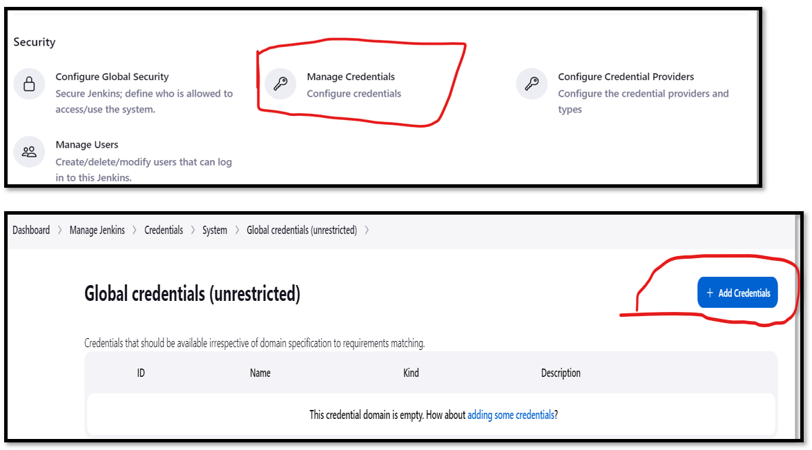
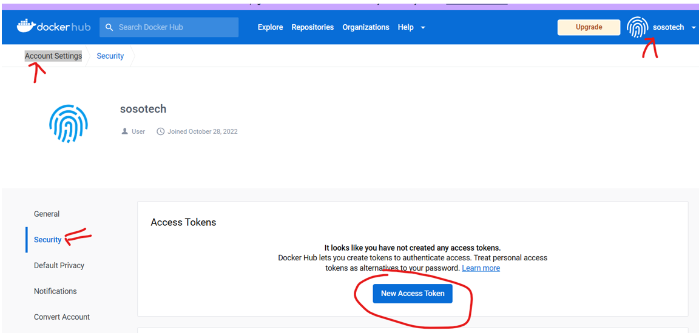

Install servers
Install Individuals servers for: - Nexus - Sonarqube - Jenkins
Nexus
- Centos 7 (Amazon Market place)
- TCP Port 8081 from MyIP and Jenkins-SG
#!/bin/bash
yum install java-1.8.0-openjdk.x86_64 wget -y
mkdir -p /opt/nexus/
mkdir -p /tmp/nexus/
cd /tmp/nexus/
NEXUSURL="https://download.sonatype.com/nexus/3/latest-unix.tar.gz"
wget $NEXUSURL -O nexus.tar.gz
EXTOUT=`tar xzvf nexus.tar.gz`
NEXUSDIR=`echo $EXTOUT | cut -d '/' -f1`
rm -rf /tmp/nexus/nexus.tar.gz
rsync -avzh /tmp/nexus/ /opt/nexus/
useradd nexus
chown -R nexus.nexus /opt/nexus
cat <<EOT>> /etc/systemd/system/nexus.service
[Unit]
Description=nexus service
After=network.target
[Service]
Type=forking
LimitNOFILE=65536
ExecStart=/opt/nexus/$NEXUSDIR/bin/nexus start
ExecStop=/opt/nexus/$NEXUSDIR/bin/nexus stop
User=nexus
Restart=on-abort
[Install]
WantedBy=multi-user.target
EOT
echo 'run_as_user="nexus"' > /opt/nexus/$NEXUSDIR/bin/nexus.rc
systemctl daemon-reload
systemctl start nexus
systemctl enable nexus
Configure Nexus
Login:
- username: admin
- Get Password: cat /opt/nexus/sonatype-work/nexus3/admin.password
Check and start the nexus service
sudo systemctl status nexus
SonarQube
- Ubuntu VERSION="18.04"
- TCP Port 9000
- TCP Port 80 from MyIP and Jenkins-SG
Sonar Installation
Script
#!/bin/bash
cp /etc/sysctl.conf /root/sysctl.conf_backup
cat <<EOT> /etc/sysctl.conf
vm.max_map_count=262144
fs.file-max=65536
ulimit -n 65536
ulimit -u 4096
EOT
cp /etc/security/limits.conf /root/sec_limit.conf_backup
cat <<EOT> /etc/security/limits.conf
sonarqube - nofile 65536
sonarqube - nproc 409
EOT
sudo apt-get update -y
sudo apt-get install openjdk-11-jdk -y
sudo update-alternatives --config java
java -version
sudo apt update
wget -q https://www.postgresql.org/media/keys/ACCC4CF8.asc -O - | sudo apt-key add -
sudo sh -c 'echo "deb http://apt.postgresql.org/pub/repos/apt/ `lsb_release -cs`-pgdg main" >> /etc/apt/sources.list.d/pgdg.list'
sudo apt install postgresql postgresql-contrib -y
#sudo -u postgres psql -c "SELECT version();"
sudo systemctl enable postgresql.service
sudo systemctl start postgresql.service
sudo echo "postgres:admin123" | chpasswd
runuser -l postgres -c "createuser sonar"
sudo -i -u postgres psql -c "ALTER USER sonar WITH ENCRYPTED PASSWORD 'admin123';"
sudo -i -u postgres psql -c "CREATE DATABASE sonarqube OWNER sonar;"
sudo -i -u postgres psql -c "GRANT ALL PRIVILEGES ON DATABASE sonarqube to sonar;"
systemctl restart postgresql
#systemctl status -l postgresql
netstat -tulpena | grep postgres
sudo mkdir -p /sonarqube/
cd /sonarqube/
sudo curl -O https://binaries.sonarsource.com/Distribution/sonarqube/sonarqube-8.3.0.34182.zip
sudo apt-get install zip -y
sudo unzip -o sonarqube-8.3.0.34182.zip -d /opt/
sudo mv /opt/sonarqube-8.3.0.34182/ /opt/sonarqube
sudo groupadd sonar
sudo useradd -c "SonarQube - User" -d /opt/sonarqube/ -g sonar sonar
sudo chown sonar:sonar /opt/sonarqube/ -R
cp /opt/sonarqube/conf/sonar.properties /root/sonar.properties_backup
cat <<EOT> /opt/sonarqube/conf/sonar.properties
sonar.jdbc.username=sonar
sonar.jdbc.password=admin123
sonar.jdbc.url=jdbc:postgresql://localhost/sonarqube
sonar.web.host=0.0.0.0
sonar.web.port=9000
sonar.web.javaAdditionalOpts=-server
sonar.search.javaOpts=-Xmx512m -Xms512m -XX:+HeapDumpOnOutOfMemoryError
sonar.log.level=INFO
sonar.path.logs=logs
EOT
cat <<EOT> /etc/systemd/system/sonarqube.service
[Unit]
Description=SonarQube service
After=syslog.target network.target
[Service]
Type=forking
ExecStart=/opt/sonarqube/bin/linux-x86-64/sonar.sh start
ExecStop=/opt/sonarqube/bin/linux-x86-64/sonar.sh stop
User=sonar
Group=sonar
Restart=always
LimitNOFILE=65536
LimitNPROC=4096
[Install]
WantedBy=multi-user.target
EOT
systemctl daemon-reload
systemctl enable sonarqube.service
#systemctl start sonarqube.service
#systemctl status -l sonarqube.service
apt-get install nginx -y
rm -rf /etc/nginx/sites-enabled/default
rm -rf /etc/nginx/sites-available/default
cat <<EOT> /etc/nginx/sites-available/sonarqube
server{
listen 80;
server_name sonarqube.groophy.in;
access_log /var/log/nginx/sonar.access.log;
error_log /var/log/nginx/sonar.error.log;
proxy_buffers 16 64k;
proxy_buffer_size 128k;
location / {
proxy_pass http://127.0.0.1:9000;
proxy_next_upstream error timeout invalid_header http_500 http_502 http_503 http_504;
proxy_redirect off;
proxy_set_header Host \$host;
proxy_set_header X-Real-IP \$remote_addr;
proxy_set_header X-Forwarded-For \$proxy_add_x_forwarded_for;
proxy_set_header X-Forwarded-Proto http;
}
}
EOT
ln -s /etc/nginx/sites-available/sonarqube /etc/nginx/sites-enabled/sonarqube
systemctl enable nginx.service
#systemctl restart nginx.service
sudo ufw allow 80,9000,9001/tcp
echo "System reboot in 30 sec"
sleep 30
reboot
Configure Sonar
Check and start the sonarqube service
sudo systemctl status sonarqube
Login: - username: admin - Password: admin
Jenkins
- Ubuntu VERSION="20.04.6 LTS
- TCP Port 8080 from Anywhere - IPv4 and IPv6
Install
If you have any issues, then: curl the IP address if you had any issues.
curl http://[your-put-IP]/latest/user-data LIKE SO: --> curl http://56.22.1.2/latest/user-data
Also refer to site to update your code: Optional-Link
Ubuntu installation script for VERSION="20.04.6 LTS
#!/bin/bash
sudo apt update
sudo apt install openjdk-11-jdk -y
sudo apt install maven -y
curl -fsSL https://pkg.jenkins.io/debian-stable/jenkins.io-2023.key | sudo tee \
/usr/share/keyrings/jenkins-keyring.asc > /dev/null
echo deb [signed-by=/usr/share/keyrings/jenkins-keyring.asc] \
https://pkg.jenkins.io/debian-stable binary/ | sudo tee \
/etc/apt/sources.list.d/jenkins.list > /dev/null
sudo apt-get update
sudo apt-get install jenkins -y
Check and start the jenkins service
sudo systemctl status jenkins
sudo systemctl status jenkins
java -version
whereis git
Get Jenkins Password
sudo cat /var/lib/jenkins/secrets/initialAdminPassword
INSTALL JDK8 On the Jenkins Server In Server terminal, Install Maven and JDK8
sudo apt update
sudo apt install openjdk-8-jdk -y
INSTALL MAVEN On the Jenkins Server
Go to the Maven site and get latest version: Right-click and copy .tar link

sudo su -
cd /opt
apt install wget
wget https://dlcdn.apache.org/maven/maven-3/3.9.1/binaries/apache-maven-3.9.1-bin.tar.gz
tar -xvzf apache-maven-3.9.1-bin.tar
mv apache-maven-3.9.1 maven
rm -rf apache-maven-3.9.1-bin.tar.gz
Install Jenkins plugins
Dashboard --> Manage Jenkins --> Plugin Manager Install the following Plugins
Pipeline Maven Integration Pipeline Utility Steps Github Integration Plugin Nexus Artifact Uploader SonarQube Scanner for Jenkins Slack Notification Plugin Build Timestamp Plugin
Global Tool Configuration
Navigate to: Jenkins UI --> manage Jenkins --> Manage Credentials --> System --> Global credentials
Configure CI [Git, Maven, JVM, SonarQube Scanner ]on Jenkins GUI. In the Jenkins UI --> manage Jenkins --> Global Tool Configuration [save]
| Services | Configured Names |
|---|---|
| JDK | SosoJDK8 |
| git | Git |
| MAVEN | SOSOMAVEN3 |
| SonarQube Scanner | sososonar4.7 |
See the Maven, Git and JDK configuration images

See the SonarQube Configuration image

Get JDK8 Path from the Jenkins Server CD to ROOT and Copy the java path. The path to add in Jenkins will be: /usr/lib/jvm/java-1.8.0-openjdk-amd64. See below Photo
sudo su -
ls /usr/lib/jvm

Configure Systems
Navigate to: Jenkins UI --> manage Jenkins --> Configure System
| Services | Configured Names |
|---|---|
| xxx | |
| xxx | |
| xxx | |
| SonarQube Servers | sososonar |
Configure Credential
| Services | Credential ID | UserName/Password/secret-text |
|---|---|---|
| Docker | ||
| AWS | ||
| MAVEN | ||
| SonarQube | sososonartoken | secret-text |
In the Jenkins UI: Configure the following credentials - AWS - DockerHub --> (generate Token) My account --> security --> secret text - k8s Config - sonarqube --> (generate Token) My account --> security --> secret text
Credential Dockerhub Credential
- Log into your dockerhub account and create a token in settings --> security: LINK


Configure SonarQube Credential
- Login to the sonarQube UI, go to Myaccount --> security

- Add a credential called: jenkins 3722a3d4c426a2a18297640295f3df3cd2eff14a
Configure AWS Credential
Jenkins Jobs
There are some Jenkins Jobs Demo'd here, like Pipeline, Freestyle:
Freestyle Project
Use this repo: https://github.com/sosotechnologies/cicd-maven.git It's a public repo, so credentials are optional See the image to guide you during setup.

Pipeline
There are 2 Options to use here: - Pipeline script - Pipeline script from SCM
Some Sample Pipeline Scripts:
- Jenkins, Maven simple pipeline
pipeline {
agent any
tools {
maven "SOSOMAVEN3"
jdk "SosoJDK8"
}
stages{
stage('Fetch code') {
steps{
git branch: 'master', url:'https://github.com/sosotechnologies/cicd-maven.git'
}
}
stage('Build') {
steps {
sh 'mvn install'
}
post {
success {
echo "Now Archiving."
archiveArtifacts artifacts: '**/*.war'
}
}
}
stage('Test'){
steps {
sh 'mvn test'
}
}
}
}
- Jenkins, Maven, Sonar-Analysis simple pipeline
pipeline {
agent any
tools {
maven "SOSOMAVEN3"
jdk "SosoJDK8"
}
stages{
stage('Fetch code') {
steps{
git branch: 'master', url:'https://github.com/sosotechnologies/cicd-maven.git'
}
}
stage('Build') {
steps {
sh 'mvn clean install -DskipTests'
}
post {
success {
echo "Now Archiving."
archiveArtifacts artifacts: '**/*.war'
}
}
}
stage('Test'){
steps {
sh 'mvn test'
}
}
stage('Checkstyle Analysis'){
steps {
sh 'mvn checkstyle:checkstyle'
}
}
stage('Sonar Analysis') {
environment {
scannerHome = tool 'sonar4.7'
}
steps {
withSonarQubeEnv('sonar') {
sh '''${scannerHome}/bin/sonar-scanner -Dsonar.projectKey=vprofile \
-Dsonar.projectName=vprofile \
-Dsonar.projectVersion=1.0 \
-Dsonar.sources=src/ \
-Dsonar.java.binaries=target/test-classes/com/visualpathit/account/controllerTest/ \
-Dsonar.junit.reportsPath=target/surefire-reports/ \
-Dsonar.jacoco.reportsPath=target/jacoco.exec \
-Dsonar.java.checkstyle.reportPaths=target/checkstyle-result.xml'''
}
}
}
}
}
3. ***FULL Pipeline***
```Jenkinfile
pipeline {
agent any
tools {
maven "SOSOMAVEN3"
jdk "SosoJDK8"
}
stages{
stage('Fetch code') {
steps{
git branch: 'master', url:'https://github.com/sosotechnologies/cicd-maven.git'
}
}
stage('Build') {
steps {
sh 'mvn clean install -DskipTests'
}
post {
success {
echo "Now Archiving."
archiveArtifacts artifacts: '**/*.war'
}
}
}
stage('Test'){
steps {
sh 'mvn test'
}
}
stage('Checkstyle Analysis'){
steps {
sh 'mvn checkstyle:checkstyle'
}
}
stage('Sonar Analysis') {
environment {
scannerHome = tool 'sonar4.7'
}
steps {
withSonarQubeEnv('sonar') {
sh '''${scannerHome}/bin/sonar-scanner -Dsonar.projectKey=vprofile \
-Dsonar.projectName=vprofile \
-Dsonar.projectVersion=1.0 \
-Dsonar.sources=src/ \
-Dsonar.java.binaries=target/test-classes/com/visualpathit/account/controllerTest/ \
-Dsonar.junit.reportsPath=target/surefire-reports/ \
-Dsonar.jacoco.reportsPath=target/jacoco.exec \
-Dsonar.java.checkstyle.reportPaths=target/checkstyle-result.xml'''
}
}
}
stage("Quality Gate") {
steps {
timeout(time: 1, unit: 'HOURS') {
// Parameter indicates whether to set pipeline to UNSTABLE if Quality Gate fails
// true = set pipeline to UNSTABLE, false = don't
waitForQualityGate abortPipeline: true
}
}
}
stage("UploadArtifact"){
steps{
nexusArtifactUploader(
nexusVersion: 'nexus3',
protocol: 'http',
nexusUrl: '172.31.18.28:8081',
groupId: 'QA',
version: "${env.BUILD_ID}-${env.BUILD_TIMESTAMP}",
repository: 'vprofile-repo',
credentialsId: 'nexuslogin',
artifacts: [
[artifactId: 'vproapp',
classifier: '',
file: 'target/vprofile-v2.war',
type: 'war']
]
)
}
}
}
}
In Global Tools Configuration, I named Maven and Jenkins like so
Maven
His: MAVEN3 mine: SOSOMAVEN3
JDK His: OracleJDK8 Mine: SosoJDK8